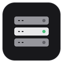

Pick a core, version and build and it downloads from the official source, ready to start. Modpacks work too.

Monolab
1.0.0 · Windows 10 and 11 · Free
Create and manage
Create and manage
Minecraft servers in one place
Set up Paper, Fabric and NeoForge servers in a few clicks, then handle the console, plugins, worlds and backups from one window — including SSH and panel servers.
Everything in one app
Search Modrinth and install with dependencies. Updates for a running server are applied on the next start.
Claude or Codex reads and edits that server's files.
Manage SSH and Hydrodactyl panel servers just like local ones.
Check and control your servers from a phone or laptop browser, even away from home.
Back up, restart with an in-game warning, or run commands on a schedule.
Before you install
If "Windows protected your PC" appears, it's because the app has no code signing certificate. Select More info → Run anyway.
This is a personal project and comes with no warranty. Keep your own backups of server folders, especially worlds.
No usage data is sent. The internet is only used to download server files and plugins from their sources and to check for updates.
NOT AN OFFICIAL MINECRAFT PRODUCT. NOT APPROVED BY OR ASSOCIATED WITH MOJANG OR MICROSOFT.